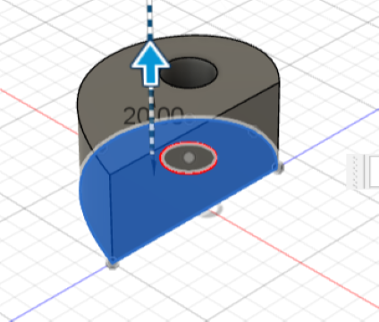
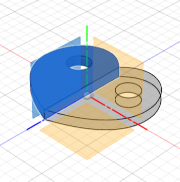
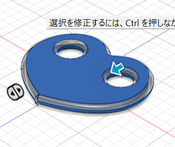
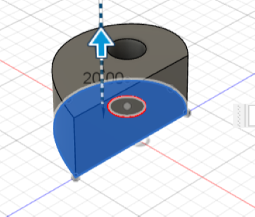
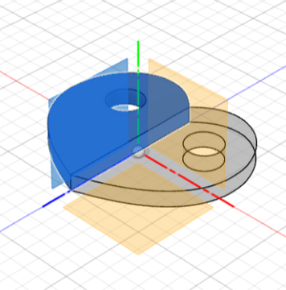
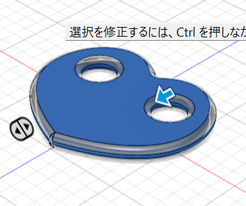

Design for Others
完成品🌼↓
左：紐調節 右：余った紐をまとめる
ラダーロックはリュックから取り外せなかったため、ピンで固定するデザインも作った。
スケッチ↓
作品説明
リュックの紐を固定するラダーロックと紐をまとめるアイテムを作った。
今回はリュックの紐が左右で違う人をテーマに考えた。
紐の長さが左右で変わってしまう原因は、リュックの紐を調節するラダーロックが滑りやすく
リュックの重さで引っ張られてしまうことだと考え、紐を通す部分をギザギザにし摩擦を増やした。
また、紐を調節した際に余っている紐の部分がどこかに引っかかって意図せず紐の長さが変わってしまう、ということも
原因に挙げられたので、紐をくるくるまとめることができるアイテムも作った。
なぜ作ろうと思ったのか
高校生の時に使っていたリュックが、走るとすぐ紐が長くなってしまうものだったのでとても不便に感じており、
何回かリュックを変えていたので、しっかり紐を固定できるアイテムがあればより使いやすくなると考えた。
また、紐を固定するだけでは長さが勝手に変わってしまう可能性があると思ったので、余ったひもの部分も固定できれば
紐をしっかり固定できると考え、紐をまとめるアイテムも作った。
紐調節のラダーロックと、紐をまとめるアイテムを花と葉っぱのデザインにしてニコイチのように作った。
かわいいデザインでファッションアイテムとしても使えると考えた。


UVプリンターを使うときのPoint🌟↓
レーザーカッターとUVプリンターを使う場合にはレーザーカッターで素材をカットする作業と、
UVプリンターで素材に色を付ける作業がある。

①線分
自由に線を引いて形を作ることができる。点と点がつながっていないとうまくいかないので注意。

②円
中心を決めて、数値入力もしくは自分で半径の長さを調節して円を作ることができる。

③押し出し
面積を選択して、数値入力もしくは矢印を引っ張て、立体にすることができる。

④ミラー
反転させたいものを選択し、対称面を選択すると左右対称の物体を作ることができる。

⑤フィレット
丸くしたい個所を選択して、角を丸くすることができる。

レーザーカッターとUVプリンターを使う場合にはレーザーカッターで素材をカットする作業と、
UVプリンターで素材に色を付ける作業がある。
🌼
①線分
自由に線を引いて形を作ることができる。点と点がつながっていないとうまくいかないので注意。
②円
中心を決めて、数値入力もしくは自分で半径の長さを調節して円を作ることができる。
③押し出し
面積を選択して、数値入力もしくは矢印を引っ張て、立体にすることができる。

④ミラー
反転させたいものを選択し、対称面を選択すると左右対称の物体を作ることができる。

⑤フィレット
丸くしたい個所を選択して、角を丸くすることができる。
